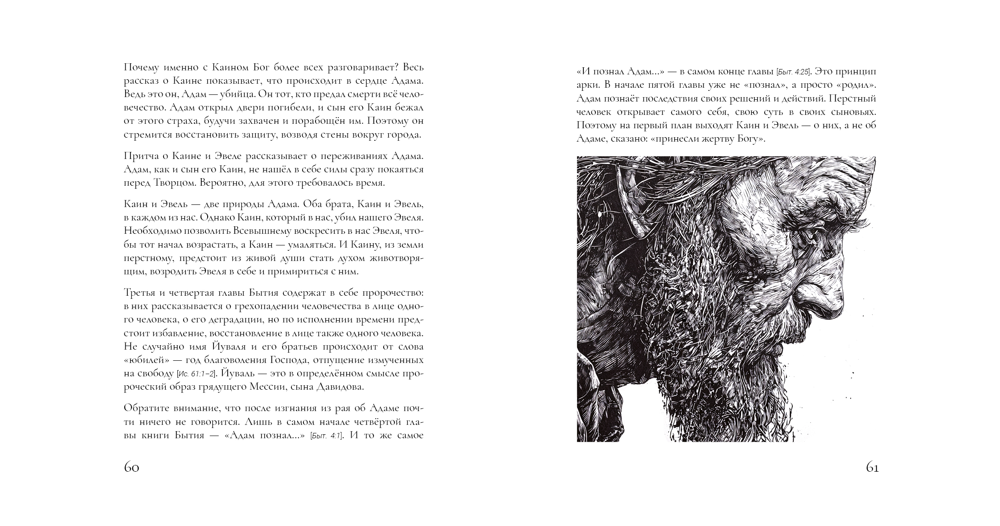

Эфраим Калиш. «МУЗЫКАНТ. Йуваль, сын Лемеха»
МУЗЫКАНТ. Йуваль, сын Лемеха
Эфраим Калиш, Израиль, 2024
Скачать PDF книги Слушать АУДИО-версию English Page of This BookКнига «Музыкант. Йуваль, сын Лемеха» опубликована в Израиле в 2024 году. 160 страниц, 48 авторских иллюстраций. Я сознательно оставил широкие поля — как рамку, как пространство для мысли. Возможно, это говорит привычка оформлять изображения в паспарту. Или — влияние тех просторов, где я родился.
Я люблю аудиокниги. Но эта книга — не просто текст. Она создана как целостное произведение, где каждое изображение, каждая сноска работают вместе. В аудиоверсии этого нет. Поэтому, если ты здесь впервые, начни с PDF. Увидь её глазами.
Некоторые развороты книги:


